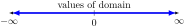

Example 1.6.1.
Type I: Only Polynomials.
\begin{equation*}
f(x) = 4x+1
\end{equation*}
Solution.
Let \(x=2\text{,}\) then \(f(x) = 4\times 2+1 = 9\) (defined), hence \(x=2\) is a domain of a \(f(x).\)
let \(x=-1\text{,}\) then \(f(x) = 4\times -1+1 = -3\) (defined), hence \(x=-1\) is a domain of a \(f(x).\)
i.e., we can put any value of a domain from real numbers to define the given function \(f(x).\)

Domain: \((-\infty, +\infty)\) or all real numbers.